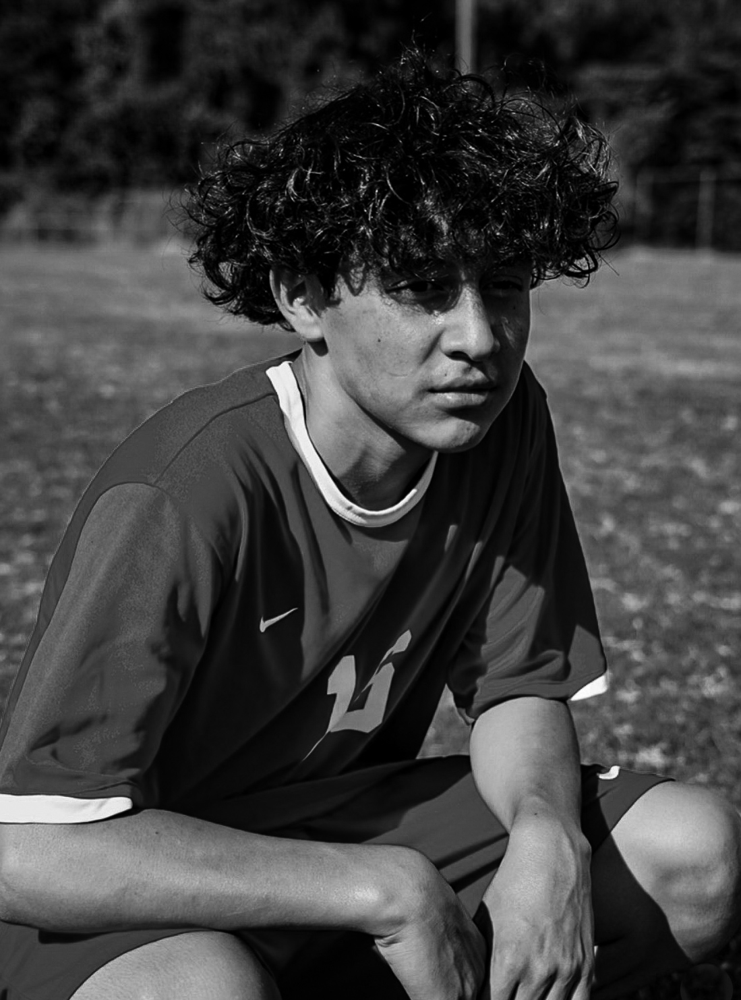
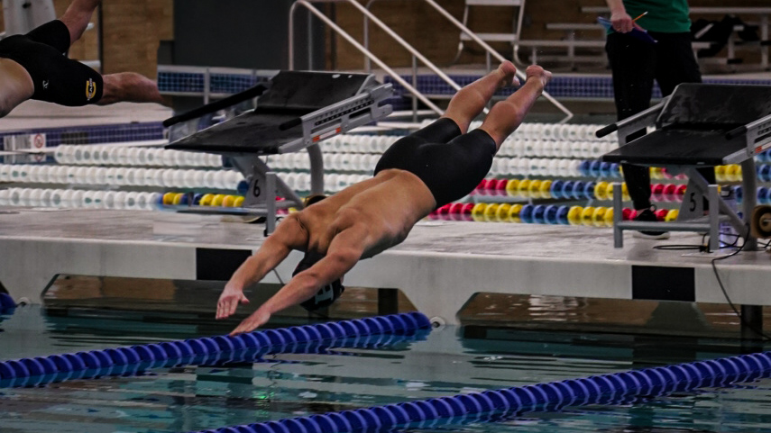
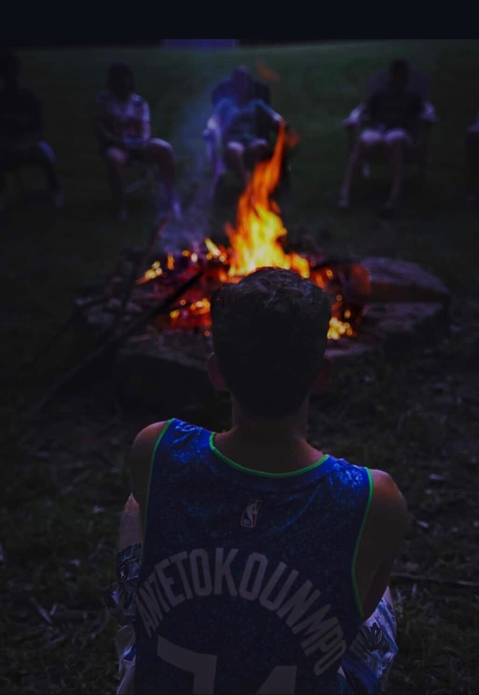
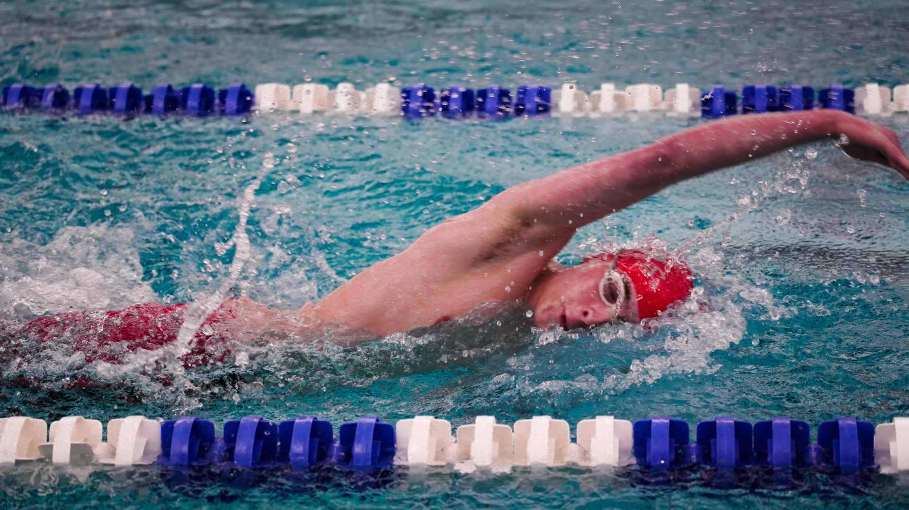
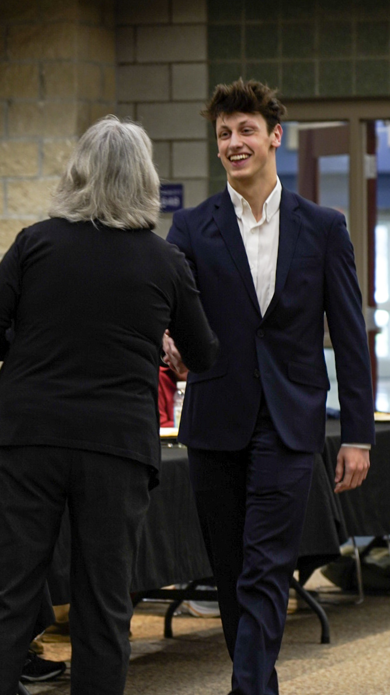

Evansville, Indiana · Available Worldwide
Photographer & Visual Storyteller





Finn Schauss is an Evansville-based photographer with an eye for tension, light, and the moments that live just between intention and instinct.
From competitive sports to editorial portraits to travel — Finn brings a cinematic sensibility to every shoot. His work is characterized by honest emotion, strong composition, and a commitment to getting the real shot, not the safe one.
Available for sports events, portraits, corporate work, and travel assignments throughout the Tri-State area and beyond.
01
Competition photography that captures the decisive moment — the dive, the drive, the finish. Fast, precise, and technically demanding.
02
From black-and-white character studies to polished professional headshots. Portraits with weight, not just flattery.
03
Corporate events, gatherings, and candid lifestyle work. Unobtrusive coverage with a strong eye for story and scene.
04
Environmental photography that makes a place feel real. Light, texture, atmosphere — not postcards.
05
Stills and sequences optimized for Instagram, brand pages, and digital campaigns. High output, high quality.
06
Have something specific in mind? Let's talk. Finn brings the same intentionality to one-off creative projects as to ongoing work.
Based in Evansville, Indiana · Available for travel